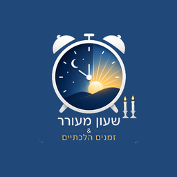
Halacha Clock שעון מעורר · זמנים הלכתיים18 זמנים הלכתיים שמחושבים על המכשיר שלך לפי לוח אור החיים / חזון יוסף, ושעון מעורר שנקבע ביחס אליהם — ומזיז את עצמו בכל בוקר.
אנדרואיד 8 ומעלה · Windows 10 ומעלה · בעברית מלאה
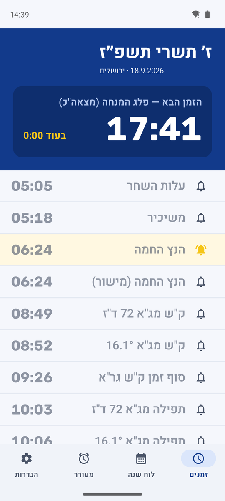
התאריך העברי, הזמן הבא עם ספירה לאחור, וכל זמני היום מתחת. ליד כל זמן פעמון — לחיצה אחת קובעת עליו שעון.
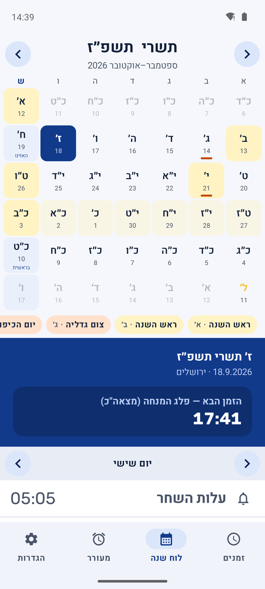
חודש עברי שלם עם מועדים ופרשיות. בחירת יום מציגה את הזמנים שלו למטה, בלי לצאת מהמסך.
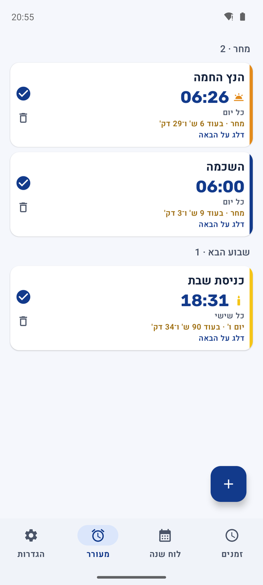
השעונים מסודרים לפי מתי הם באמת יצלצלו — מחר, השבוע הבא — עם הזמן שנותר, וכפתור דילוג על הצלצול הקרוב.
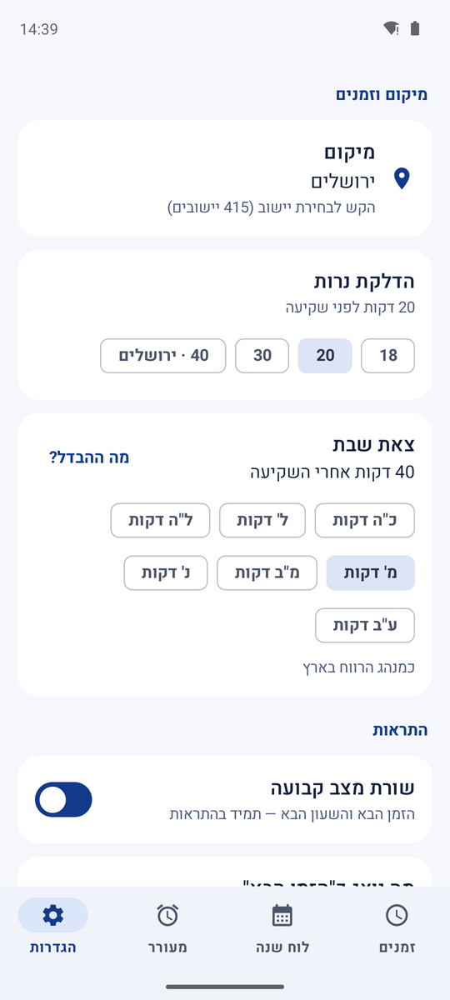
מיקום, דקות הדלקת נרות, שיטת צאת שבת, ושורת המצב הקבועה — כל אחד עם ההסבר שלו לידו.
״30 דקות לפני הנץ״ נשמר כהוראה, לא כשעה. בכל לילה הוא מחושב מחדש לפי הזמנים של מחר במקום שלך, ומצלצל בדקה הנכונה.
הזמנים מחושבים לפי שיטת מרן הרב יצחק יוסף — שעות זמניות לפי היום. החישוב נבדק מול הלוח המודפס בחמש ערים.
לתפילת ותיקין צריך את ההנץ שבאמת נראה מעל ההרים. האפליקציה מציגה אותו מנתוני ChaiTables, לצד הנץ המישור.
התראת כניסת שבת בכל יום שישי עם מסך נרות וצליל משלה, דקות הדלקת נרות לבחירתך, וצאת שבת בשבע שיטות — מכ״ה ועד ע״ב דקות.
לחיצה אחת דורכת התראה חד-פעמית לערב הזה בלבד, בסמוך לצאת הכוכבים. היא מוחקת את עצמה אחרי שצלצלה.
אזעקות מדויקות, מסך צלצול מעל המסך הנעול, חזרה אוטומטית אחרי הפעלה מחדש — ובהגדרות יש ״בדיקת אמינות״ שמצלצלת בעוד דקה כדי שתדע שזה עובד.
הגבלת מספר הנודניקים, שאלת חשבון שצריך לפתור כדי לכבות, ובדיקת ערות שמצלצלת שוב אם לא אישרת שקמת.
אין חשבון, אין פרסומות, אין כלי מעקב או אנליטיקס, ואין שרת שלנו. החישוב כולו מקומי, וההסרה מוחקת הכול.
תוכנת Windows נלווית מציגה את אותם זמנים ואת אותו לוח שנה, עם וידג׳ט צף ותזכורות — לימוד ועבודה מול אותו לוח.
השעון הרגיל הוא שעון רגיל. השעון ההלכתי נקבע ביחס לזמן — 30 דקות לפני הנץ, ברגע מנחה קטנה, רבע שעה אחרי השקיעה — והאפליקציה מחשבת אותו מחדש כל יום. התראת כניסת שבת מגיעה לבד בכל יום שישי, עם מסך נרות וצליל נפרד.
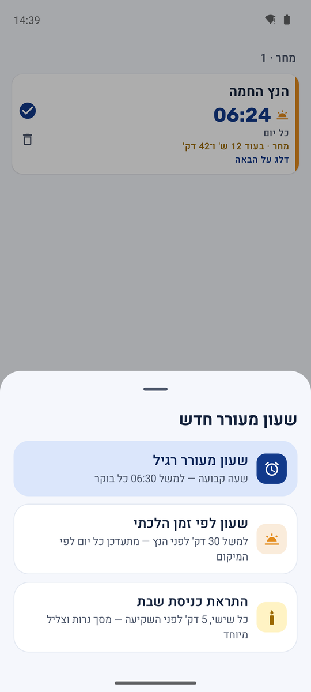
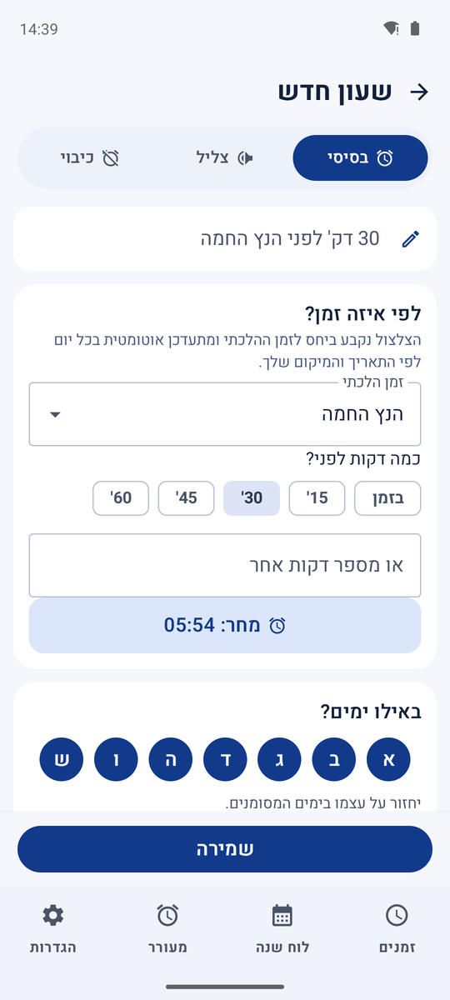
שעון רגיל שנקבע לפי צאת הכוכבים מתעדכן בכל יום מחדש — ברגע שצאת הכוכבים של הערב עבר, הוא כבר מחכה למחר. בדיוק בגלל זה אי אפשר לבנות עליו תזכורת חד-פעמית לערב הזה: היא הייתה נעלמת בשקט לתוך המחר, בלי לצלצל בכלל.
שומר לערבית הוא תזכורת נפרדת מהשעונים הרגילים: לחיצה אחת על התג האדום שליד ״צאת הכוכבים״ — במסך הזמנים או בווידג׳ט — קובעת התראה חד-פעמית להערב הזה בלבד, כברירת מחדל שתי דקות אחרי צאת הכוכבים לחומרא. היא מצלצלת עשר שניות, המסך נשאר פתוח עד אישור, ואז היא נמחקת לגמרי — לא נשארת ברשימת השעונים ולא חוזרת מחר. מי שהמניין שלו קבוע לשעה אחרת יכול לבחור זמן משלו באותו דיאלוג.
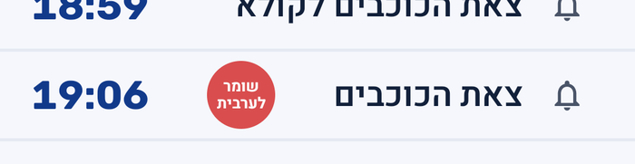
לפני דריכה
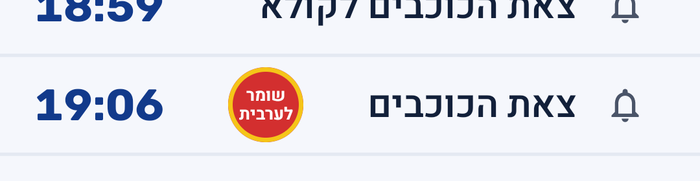
אחרי דריכה — הטבעת הזהובה אומרת שההתראה פעילה
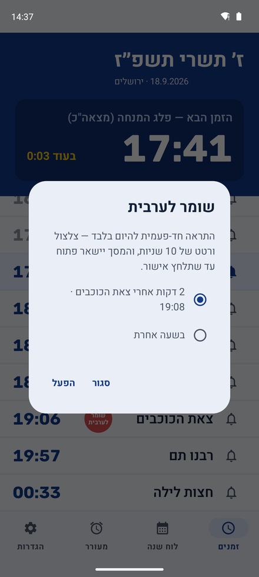
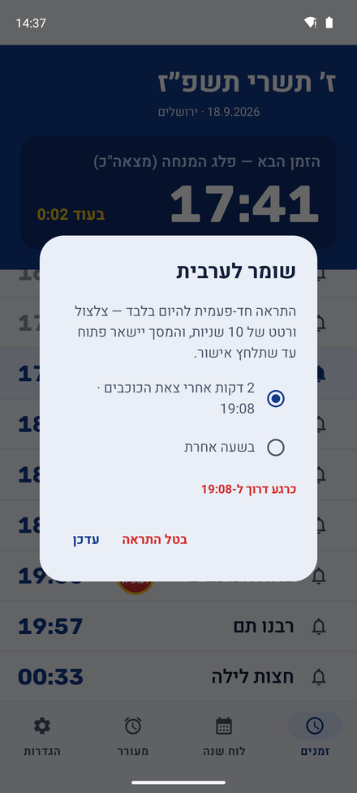
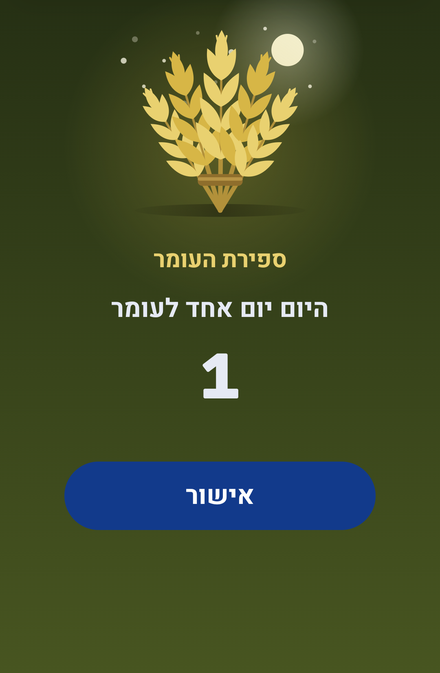
ספירת העומר היא מצווה שתלויה בלילה — מליל ט״ז בניסן ועד ערב שבועות, כל לילה בזמנו, בלי לדלג. שעון רגיל שנקבע פעם אחת לא מספיק כאן: הוא לא יודע להפסיק אחרי הספירה המ״ט, ולא יודע לשתוק בכניסת שבת או יום טוב.
לכן ההתראה הזו אינה שעון שבונים — היא כפתור אחד בהגדרות. בהדלקה היא מנהלת את עצמה: מופיעה בכל לילה בצאת הכוכבים לחומרא עם הנוסח המלא מהסידור, "היום ... לעומר" עם פירוט השבועות והימים כשיש, שותקת בערבי שבת ויום טוב, וכשהספירה המ״ט מגיעה — נכבית לגמרי מעצמה, מוכנה להידלק שוב בשנה הבאה.
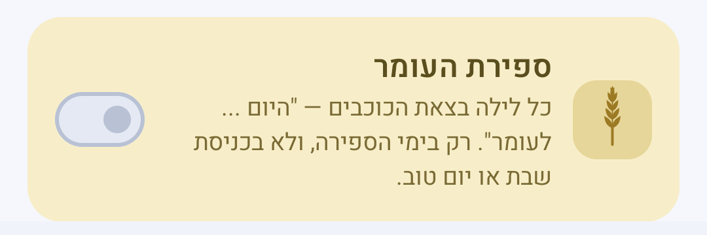
כרטיס ספירת העומר בהגדרות — כפתור אחד, וזהו
שורת מצב קבועה מציגה את הזמן ההלכתי הבא ואת השעון המעורר הבא, בלי לפתוח כלום. אם מחקת אותה בטעות בהחלקה — היא חוזרת בעצמה.
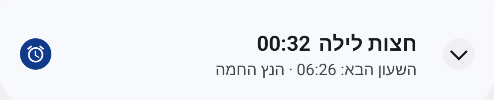
שורת המצב הקבועה, כפי שהיא נראית בהתראות
וידג׳ט 4×2 שמציג את הזמנים שבחרת ואת הזמן הבא, עם כפתור ״שומר לערבית״ מובנה — ווידג׳ט 2×2 קטן לתאריך העברי בלבד.
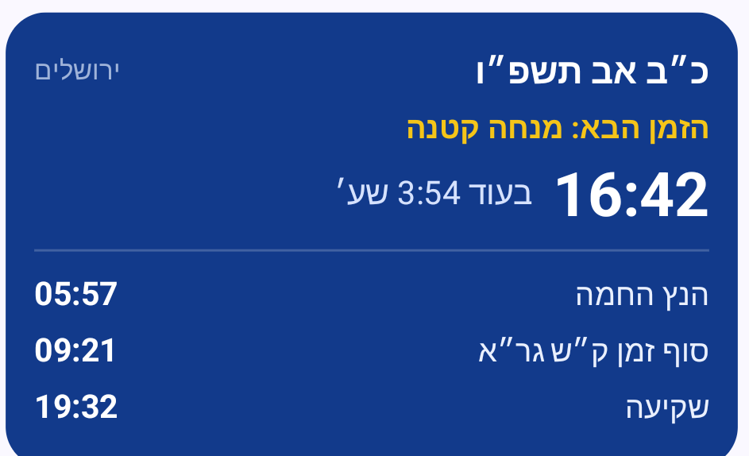
וידג׳ט הזמנים — אתה בוחר אילו זמנים יופיעו בו
שתי גרסאות, אותו מנוע חישוב. בוחרים פלטפורמה ומתחילים.
ההתקנה ל-Windows היא קובץ .exe רגיל. אם SmartScreen מציג אזהרה על מפתח לא מוכר —
״מידע נוסף״ ואז ״הפעל בכל זאת״.